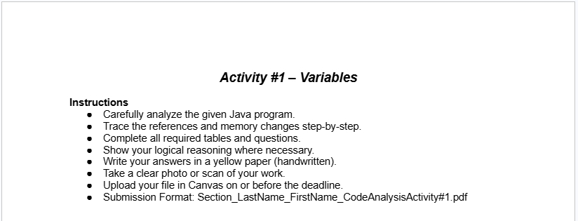
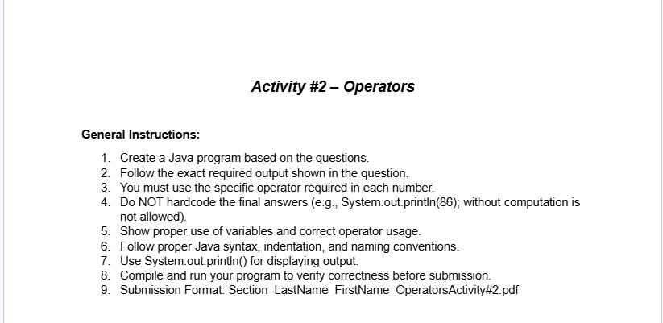
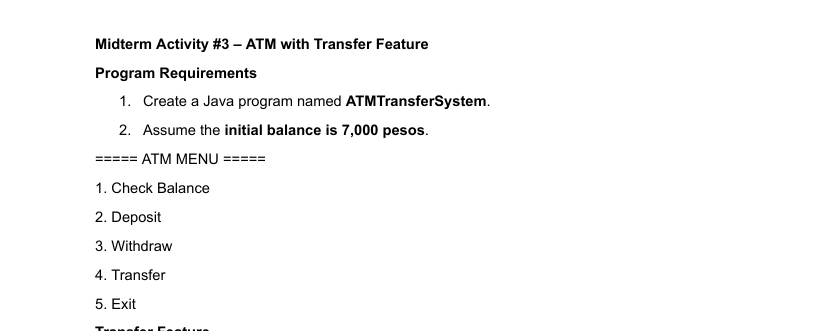
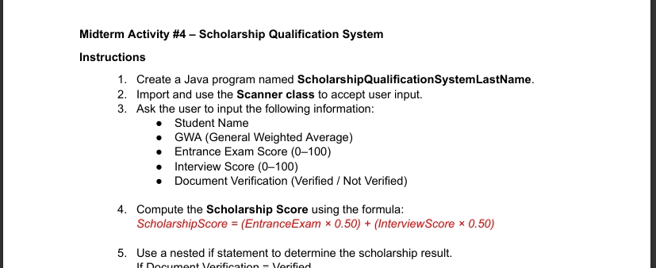
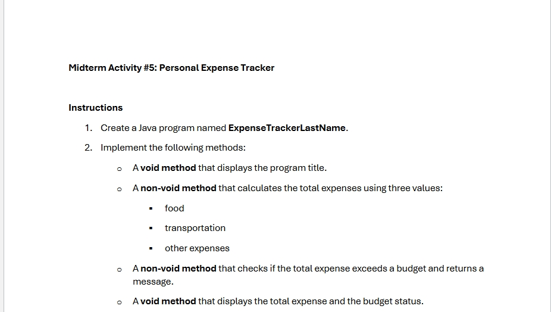

MIDTERM ACTIVITY

REFLECTION: I learned how Java manages variables in different memory areas like the Stack, Heap, and Method Area. I also understood how object references work, especially how multiple variables can point to the same object. It was interesting to see how static variables affect the entire class.

REFLECTION: In this activity, I learned how to implement various Java operators, including bitwise, ternary, assignment, and logical operators. I practiced using the ternary operator as a concise way to evaluate boolean conditions and return specific values. Additionally, I gained experience with assignment operators to perform calculations like addition and multiplication while updating variable values.

REFLECTION: In this activity, I practiced using control flow structures like do-while loops and switch statements to build a functional ATM interface. I learned how to implement input validation for financial transactions, ensuring transfer amounts are positive and within the available balance. It was also a great exercise in managing program logic through nested if statements to handle specific rules, such as withdrawal limits.

REFLECTION: In this activity, I learned how to use nested if statements to handle multi-layered logic, such as checking document status before evaluating scores. I practiced using the Scanner class to capture various data types and applied a formula to calculate a weighted average for scholarship eligibility. Additionally, I used switch statements to categorize students into scholarship types based on their GWA ranges.

REFLECTION: In this activity, I learned how to create and use void and non-void methods to organize a program into reusable blocks. I practiced passing parameters into methods to calculate totals and returning values, like a string message for budget status. It also helped me understand how to implement user-driven enhancements, such as computing the remaining budget and adding extra expense categories.